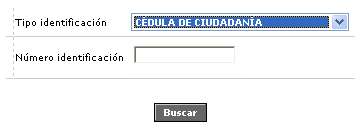
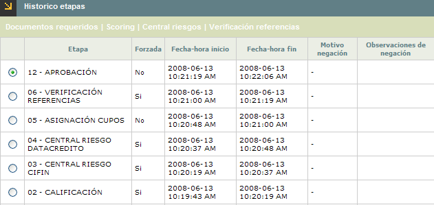
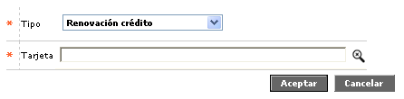

Actualización de solicitudes
A través de este formulario la entidad captura la información referente a todos los tipos de solicitudes diferentes a Crédito nuevo. Inicialmente, el formulario cuenta con un filtro de búsqueda en la parte superior que traerá la información de todas las solicitudes que posea el cliente consultado.
Adicionalmente, El formulario contiene los enlaces: Actualizar, Eliminar, Adicionar, Detalle, y Consultar etapa.

Filtro: Se pueden realizar consultas a través de las siguientes opciones:
Tipo identificación |
En este campo se selecciona de una lista de valores, el tipo de documento de identificación del cliente. |
Número identificación |
En este campo se debe capturar el número del documento de identificación del cliente para registrar o consultar una solicitud de crédito nuevo. Acepta máximo 16 caracteres. |
Al utilizar el botón Buscar, el sistema despliega todas las solicitudes diferentes a Crédito nuevo, que tenga el cliente consultado.

Adicionar: Al activar ese enlace se despliega un formulario con los siguientes campos:

Tipo |
En este campo obligatorio se selecciona de una lista de valores, el tipo solicitud que se desea grabar. |
Tarjeta |
Campo obligatorio en el que a través de esta lista de valores, el usuario debe seleccionar la tarjeta para la cual se ingresará la solicitud. Esta lista se mostrará en blanco en caso que el cliente no tenga tarjetas. |
Los tipos de solicitud que que se pueden seleccionar desde la lista de valores del campo Tipo son: Variación cupo crédito, Renovación crédito, Reposición crédito, Reexpedición crédito, Reactivación crédito, Línea crédito adicional, Cambio ciclo facturación, Cancelación voluntaria crédito, Cambio producto crédito.